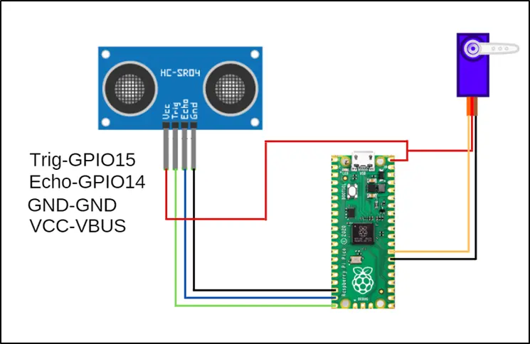

Piggy Bank
In this project, you will make yourself a very enjoyable and cute piggy bank. You will use the servo motor and ultrasonic distance sensor while making the piggy bank.
Ultrasonic sensors are sensors that show electrical change by being affected by sound waves. These sensors send sound waves at a frequency that our ears cannot detect and produce distance information by calculating the return time of the reflected sound waves.
Wiring Diagram

Project Code (Click to Try It)